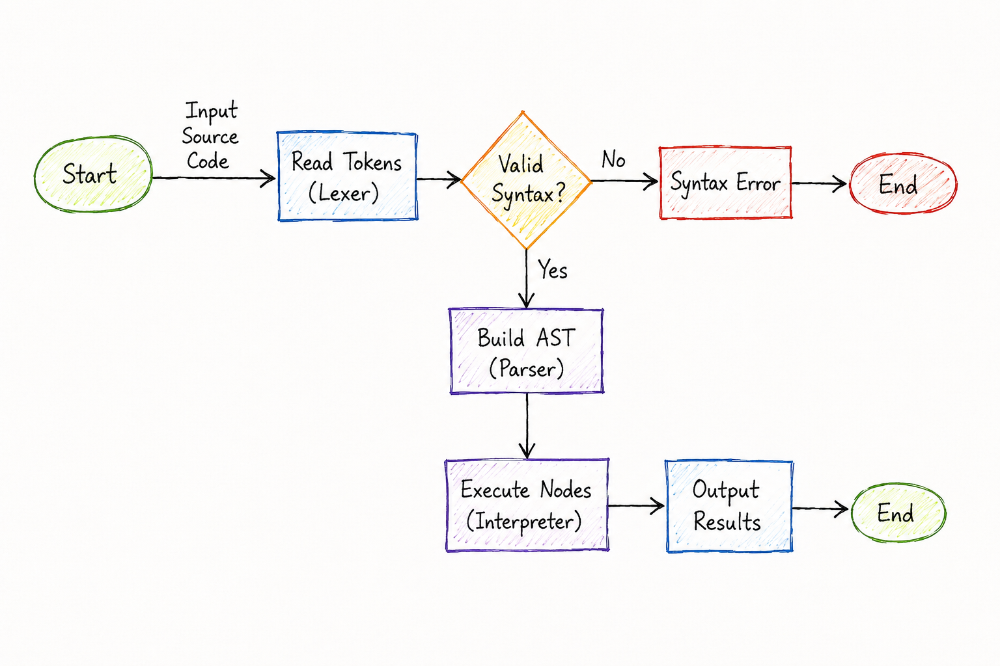

Introduction
AbiLang is a progressive, lightweight, and versatile scripting language named after you (Abinash). Built from scratch using TypeScript, it runs natively on both backend environments via CLI terminal engines and in web browsers through an interactive sandboxed playground.
const, let) and mandatory semicolons, and introduce robust structural clarity with clean braces and optional parameter parentheses.
5 Standout Innovations That Make AbiLang Special
- 1. Zero-Boilerplate Component Exports (
.abx): No verbose state hooks or complex boilerplate. Define component state directly using cleanconst name = "value"statements inside standard<script>blocks. - 2. Auto-Healing Dev Ports: Senses port collisions on
8080and automatically falls back to8081,8082, etc. with zeroEADDRINUSEcrashes. - 3. Smart Target Selection Prompt (
pnpm start): An interactive launcher menu to pick Web Playground, Mobile App (with USB/emulator device checks), or CLI REPL. - 4. Native Dump & Die (
dx()): Dumps variable values in formatted dark mode and halts execution immediately right where it was called. - 5. Universal Execution Pipeline: Engineered in TypeScript to execute identically across Terminal CLI, Browser Sandboxes, and Mobile Viewports.
Language Structure & Use
AbiLang is designed around a three-tier architecture that tokenizes, parses, and executes code trees natively in safe environment contexts. Understanding its structure helps in leveraging its features for rapid scripting, backend logic orchestration, and lightweight browser playground views.
1. Framework Engine Architecture
The compiler and runner pipelines are divided into three core stages:
- Lexical Analyzer (Lexer): Converts raw script characters into structured language tokens (keywords, literals, operations).
- Syntax Analyzer (Parser): Arranges tokens into an Abstract Syntax Tree (AST) using recursive descent parsing. It enforces constraints on expressions and statements.
- Evaluation Tree (Interpreter): Evaluates AST nodes recursively, utilizing isolated lexical environments to execute instructions in real time.

2. What Makes AbiLang Different?
AbiLang introduces a streamlined development experience:
- No Boilerplate Declarations: Variables are dynamically initialized on first assignment. No extra lexical keywords needed.
- Native App Architecture: Built-in classes for logical Handlers and Entities, dynamic routes registration, and automatic Screens resolution.
- Dump & Die Debugging: Powerful variable inspection via the built-in
dx()helper — dumps value, type, and halts execution immediately. Uselog_core()for non-halting logic-layer logs andlog_view()for template/screen-layer logs. - Cross-Platform Portability: Designed to run identically inside terminal shells and inside sandboxed web frames.
3. Use Cases & Applications
AbiLang is ideal for building dynamic, multi-platform applications, including:
- Backend Tasks & Helpers: Automate database migrations, connect to third-party endpoints, or run scheduled background scripts.
- Web Portals & Endpoints: Register navigation path schemas to resolve handlers and screen layouts with active templating.
- Lightweight UI Components: Embed screens dynamically inside web layouts using clean layout includes and esbuild transformation hooks.
Installation & CLI
Run the AbiLang compiler CLI and local web playground directly on your machine. Choose the appropriate installer command for your environment below.
macOS & Linux Setup
To run the single-click remote automated installation script, copy the command below:
curl -fsSL https://raw.githubusercontent.com/abinashmofficial/abi-lang/main/install.sh | bashInteractive CSS Framework & Database Selector
During project initialization via install.sh, the automated installer prompts you to select your preferred database driver and CSS design system:
- Bootstrap 5 (Modern Grid & Component System)
- Tailwind CSS (Utility-First Responsive UI)
- Materialize CSS (Google Material Design System)
- Bulma CSS (Pure Flexbox Layout Framework)
- Foundation CSS (Advanced Responsive Framework)
- Vanilla CSS (Zero External Dependencies)
Manual Compilation & Local Run
If you prefer a manual setup, clone the repository, install its packages using pnpm or npm, and boot up the project. Running pnpm start presents an interactive selection prompt to launch the Web Playground, Mobile App (with connected device checks), or CLI REPL:
git clone https://github.com/abinashmofficial/abi-lang.git
cd abi-lang
pnpm install
pnpm run build
pnpm startIDE Syntax & Extensions
AbiLang provides official syntax highlighting and file extension configurations for popular IDEs (VS Code, VS Code Insiders, Vim, and Sublime Text). This ensures developers get a seamless editing experience with zero error flags. Keywords like class are highlighted with standard control coloring, while class identifier names (e.g. BaseHandler) are highlighted in vibrant green.
Supported File Extensions
You can write and execute AbiLang script files and templates using any of these standard extensions:
.abx- Standard component template, logic, and layout extension.abi- Legacy script extension.ab- Short unique extension.abilang- Explicit verbose extension
Auto-Installer Script
To register the file type associations and coloring configurations globally for all editors on your machine (including VS Code and VS Code Insiders), run:
node scripts/install-syntax.jsVariables
Variables in AbiLang store data dynamically. You do not need keywords like var, let, or const, and semicolons are completely optional.
name = "Abinash"
age = 21
pi = 3.14159
print "Name: " + nameConditionals
Conditionals allow branching execution. AbiLang utilizes modern block scoping via braces {} while making parentheses around expressions optional.
score = 85
if score >= 90 {
print "Grade A"
} else if score >= 80 {
print "Grade B"
} else {
print "Grade F"
}Loops
Iterate over code ranges efficiently. AbiLang supports standard while loops and native array iterations without parenthesis boilerplates.
count = 1
while count <= 3 {
print "Count: " + count
count = count + 1
}Functions
Functions isolate modular calculations. AbiLang uses the func keyword to declare reusable code blocks that accept arguments and return evaluations.
func greet(name) {
return "Hello, " + name + "!"
}
message = greet("Abinash")
print messageHandlers & Entities (OOP Concepts)
AbiLang utilizes Object-Oriented Programming (OOP) paradigms by leveraging the dynamic nature of dictionary literals and lexical closures. Since AbiLang focuses on a clean syntax without boilerplate class decorators, objects are instantiated using Factory Constructor Patterns.
- Objects: Created as dynamic dictionaries (
{}) containing both attributes and member functions. - Encapsulation: Private fields can be initialized in constructor scopes; inner functions capture these states in their closures.
- Inheritance: Accomplished by initializing parent object dictionaries and merging/extending them with new attributes or overridden functions.
Defining OOP Entities
In AbiLang, entities represent database models and domain objects. You can structure them as constructor classes using factory functions:
func UserEntity(id, name, email) {
self = {}
self.id = id
self.name = name
self.email = email
func get_info() {
return "User: " + self.name + " (" + self.email + ")"
}
self.get_info = get_info
func update_email(new_email) {
self.email = new_email
return self
}
self.update_email = update_email
return self
}To use this entity in your application:
include("abicore/entities/user_entity.abi")
user1 = UserEntity(1, "Abinash", "abinash@example.com")
user2 = UserEntity(2, "Developer", "dev@example.com")
print user1.get_info()
user1.update_email("abinash.official@example.com")
print user1.get_info()Handler Classes & OOP Inheritance
Handlers manage application logic, coordinating between entities and screens. You can implement handler classes that inherit behavior from other classes using the extends keyword:
class BaseHandler {
public func init(name) {
this.name = name
}
public func log_access() {
print "Access logged for: " + this.name
}
}Then, extend the base class to inherit methods and properties:
include("abicore/handlers/base_handler.abi")
include("abicore/entities/entity.abi")
class Handler extends BaseHandler {
public func index() {
this.log_access()
e = Entity()
print "Calling entity: " + e.data()
return screen("index")
}
}Additionally, you can define classes with public and private methods, using this to reference instance properties and methods:
include("abicore/entities/user_entity.abi")
class UserHandler {
public func init(user_id) {
this.user_id = user_id
}
public func show() {
this.log_profile_view()
user_data = UserEntity()
return screen("profile")
}
private func log_profile_view() {
print "Accessing user profile for: " + this.user_id
}
}Finally, register the handler action in your routing system:
include("abicore/handlers/user_handler.abi")
route("get", "/user/show", "user_handler@show", "user.show")Try / Catch / Finally
AbiLang provides try-catch-finally block structures to safely capture and handle execution and syntax/runtime errors:
try {
print undefined_var
} catch (e) {
print "An error occurred: " + e
} finally {
print "Clean execution finished"
}Built-in Database & Debugging Helpers
Perform mock database connections, mutations, queries, and formatted variable dumping using debug and logging utilities:
conn = db_connect({ "host": "localhost", "port": 3306 })
record = db_create("users", { "username": "Abinash", "email": "abinash@example.com" })
records = db_fetch("users", { "status": "active" })
dx(record) # Dump and stop execution (dark-styled, Laravel-like)
log_core(record) # Log from logic/script layer - outputs [CORE LOG]
log_view(record) # Log from template/screen layer - outputs [VIEW LOG]Debugging Helper Reference
| Function | Output Label | Layer | Halts Execution? | Returns Value? |
|---|---|---|---|---|
dx(value) |
⚡ [AbiLang dx() Dump] |
Any | ✅ Yes | — |
log_core(value) |
[CORE LOG] |
Logic / Script files (.abi) |
No | ✅ Yes (pass-through) |
log_view(value) |
[VIEW LOG] |
Template / Component files (.abx) |
No | ✅ Yes (pass-through) |
Component & View Syntax
AbiLang uses .abx files as its screen/view layer. Every .abx file is a server-side template that renders to plain HTML, using clean keywords so the syntax feels natural and easy to read.
.abx template syntax is designed to be clean, modular, and fast — without any build tooling complexity. Write HTML, add logic, compose screens — that's it.
1. render — Include a Screen or Component
The render keyword pulls another .abx file into the current screen, exactly where the statement appears. This makes rendering UI components feel extremely natural and explicit.
render Header from "layout/header"
render Docx from "docx"
render Footer from "layout/footer"Header, Docx) is just a label for readability — it does not create a variable. The file is inlined at render time.
2. Reusable Layouts & Components
In AbiLang, child layouts and reusable templates are simply plain .abx files. You do not need any special headers or keywords (like component or export) at the top of the file. Just write standard HTML and templating syntax. The rendering context is automatically scoped to the component (via with(context)), meaning properties can be outputted directly using {{ variableName }} instead of {{ context.variableName }}.
GET, POST, PUT, DELETE, OPTIONS) and handles preflight options requests, ensuring backend APIs can be reached from external clients and browsers seamlessly.
For example, a sub-screen component:
<section class="docs-section">
<h2>Documentation V1</h2>
<p>AbiLang reference material...</p>
</section>Then render it inside another screen:
render Header from "layout/header"
render Docx from "docx"
render Footer from "layout/footer"
<Header />
<Docx />
<Footer />3. <script> — Logic & State Block
Wrap component logic inside a standard <script></script> block. This runs when the component initializes to load state, process data, or import resources for the template.
<script>
import messages from "../lang/en/messages.json";
const lang = messages || { title: "AbiLang", subtitle: "Welcome" };
const title = lang.title;
</script><script> block supports both JavaScript (Default) and TypeScript syntax with clean ES imports, universal reactive signals ($state), and component state logic.
4. {{ }} — Inline Expression Output
Use double curly braces to output any JavaScript expression directly into the HTML. This replaces the old <%= expr %> syntax.
<h1>{{ lang.title }}</h1>
<p>{{ lang.subtitle }}</p>
<div>
<strong>Platform:</strong> {{ os.platform() }}
<strong>Memory:</strong> {{ Math.floor(os.freemem() / 1024 / 1024) }}MB
<strong>Uptime:</strong> {{ Math.floor(os.uptime()) }}s
</div>5. Complete Screen Example
Here is a full abicore/screens/index.abx showing all four features working together:
import Header from "layout/header"
import Footer from "layout/footer"
<script>
import messages from "../lang/en/messages.json";
const lang = messages || { title: "AbiLang", subtitle: "Welcome" };
</script>
<Header />
<section class="hero-section">
<h1>{{ lang.title }}</h1>
<p>{{ lang.subtitle }}</p>
<div>
Platform: {{ os.platform() }} |
Memory: {{ Math.floor(os.freemem() / 1024 / 1024) }}MB
</div>
</section>
<Footer />6. Keyword Reference
| AbiLang Keyword | What it Does | AbiLang Equivalent | Old Syntax (EJS) |
|---|---|---|---|
render X from "path" |
Include another .abx file inline | <X /> component tag (AbiLang native) |
@include("path") |
<script>...</script> |
Component logic and reactive state | <script> (AbiLang native) |
<% code %> |
{{ expression }} |
Output a value into HTML | {{ expression }} (AbiLang native) |
<%= expression %> |
publish ComponentName |
Register a named component for use by other screens | publish (AbiLang native) |
export { ComponentName } |
publish default ComponentName |
Mark the primary/main component of this file (one per page) | publish default (AbiLang native) |
export default ComponentName |
7. Sharing Data & Exports (Context & Props)
AbiLang templates share a dynamic context object between parent screens and child layout templates. This allows you to pass data (props) down to layouts, or export data up from components.
Passing Data Down (Props)
Assign any variable to the component script scope inside the parent screen's logic block:
<script>
const pageTitle = "Home Dashboard";
const user = { name: "Abinash", role: "Admin" };
</script>
import Header from "layout/header"Then read and output the variables inside the child component/layout template:
<header>
<h1>{{ pageTitle }}</h1>
<span>Logged in as: {{ user.name }}</span>
</header>Exporting Data Up from Components
If a reusable component prepares data or configuration, it can declare variables inside its component script block:
<script>
const sidebarLinks = ["Home", "Docs", "Settings"];
</script>The parent template can access the exported variables anywhere after rendering the component:
render Sidebar from "layout/sidebar"
<footer>
<p>Available Links: {{ context.sidebarLinks.join(', ') }}</p>
</footer>8. Reusing the Profile Component
Configure a component file, import/export its scope variables, and render it in multiple places with custom parameters.
1. Component View: abicore/screens/components/profile_card.abx
<script>
const name = profileName || "Abinash";
const role = profileRole || "Lead Platform Architect";
</script>
<div class="profile-card">
<h2>User Profile</h2>
<hr>
<p><strong>Name:</strong> {{ name }}</p>
<p><strong>Role:</strong> {{ role }}</p>
</div>2. Reusing in Main Screen: abicore/screens/dashboard.abx
import Header from "layout/header"
import ProfileCard from "components/profile_card"
import Footer from "layout/footer"
<script>
import messages from "../lang/en/messages.json";
const profileName = "Abinash";
const profileRole = "Administrator";
</script>
<Header />
<ProfileCard profileName="Abinash" profileRole="Administrator" />
<ProfileCard profileName="Jane Doe" profileRole="Support Manager" />
9. Universal Signals (`$state`) & Async Data Loader (`$fetch`)
AbiLang provides built-in reactive signals and data loading helpers that work across browser environments, CLI, and exported framework targets:
<script>
import messages from "../lang/en/messages.json";
// 1. Reactive Universal Signal State
const count = $state(0);
// 2. Declarative Async Data Fetcher
const { data: user } = $fetch("/api/user", { name: "Abinash", role: "Lead Architect" });
const lang = messages || { title: "AbiLang", subtitle: "Welcome" };
</script>
<div class="card">
<h1>{{ lang.title }}</h1>
<p>Logged in as: {{ user.name }} ({{ user.role }})</p>
<button onClick={count.value++}>Clicks: {{ count.value }}</button>
</div>
10. Exporting `.abx` to Modern Frontend & Mobile Frameworks
AbiLang includes CLI commands to transpile `.abx` component files directly to native components for React, Vue.js, Svelte, Solid.js, Next.js, Angular, Web Components, React Native, Astro, Qwik, and TypeScript Types:
# Export to React JSX (.jsx)
abi build Dashboard.abx --target react
# Export to Vue Component (.vue)
abi build Dashboard.abx --target vue
# Export to Svelte Component (.svelte)
abi build Dashboard.abx --target svelte
# Export to Solid.js (.jsx)
abi build Dashboard.abx --target solid
# Export to Angular Component (.ts)
abi build Dashboard.abx --target angular
# Export to Next.js Page (.jsx)
abi build Dashboard.abx --target next
# Export to Web Component Custom Element (.js)
abi build Dashboard.abx --target webcomponent
# Export to React Native Mobile (.jsx)
abi build Dashboard.abx --target react-native
# Export to Astro Component (.astro)
abi build Dashboard.abx --target astro
# Export to Qwik Component (.tsx)
abi build Dashboard.abx --target qwik
# Export to TypeScript Types Definition (.d.ts)
abi build Dashboard.abx --target ts-types
Syntax Flexibility: standard ES imports (import Component from "path") and standard <script> tags are fully supported alongside render syntax.
publish & publish default
AbiLang uses publish as its native, meaningful keyword for making components and values available to other files — a clean alternative to JavaScript's export. Every .abi script file can publish multiple named values, but each file should have at most one publish default — the primary/main component of that module.
publish instead of export? The word publish is intentionally more descriptive — it communicates that a component is being published as part of the module's public API to the outside world, rather than just moved out. It also avoids collision with JavaScript module semantics when AbiLang scripts run inside mixed environments.
1. Named Publish — publish ComponentName
Use publish to make a specific function, class, or value reachable from other AbiLang files. A single file can publish as many named values as it needs:
func greet(name) {
return "Hello, " + name + "!"
}
func farewell(name) {
return "Goodbye, " + name + "!"
}
publish greet
publish farewellpublish registers the value globally so it can be resolved when another file calls include("this_file.abi"). Think of it as declaring the public API of your script file.
2. Default Publish — publish default ComponentName
Use publish default to declare the single main component of a file. This is the entry point that gets resolved when another screen renders the file without specifying a named member. Each file should have at most one publish default:
class ProfileCard {
public func init(name, role) {
this.name = name
this.role = role
}
public func render() {
return "<div>" + this.name + " — " + this.role + "</div>"
}
}
publish ProfileCard # named publish — available by name
publish default ProfileCard # default publish — primary component of this fileexport default in JavaScript/TypeScript, only one component should be the default. Use publish (without default) for all additional values.
3. Comparison with JavaScript
| Pattern | AbiLang | JavaScript Equivalent |
|---|---|---|
| Named export | publish ComponentName |
export { ComponentName } |
| Default/main export | publish default ComponentName |
export default ComponentName |
| Multiple named exports | One publish per name |
export { A, B, C } |
| Max defaults per file | 1 (publish default) |
1 (export default) |
4. Full Component File Example
A complete .abi handler file that publishes both a named helper and a default handler class:
func format_date(date_str) {
return "[" + date_str + "]"
}
class DashboardHandler {
public func init(user) {
this.user = user
}
public func index() {
formatted = format_date("2026-07-27")
print "Dashboard loaded for: " + this.user
return screen("dashboard")
}
}
publish format_date # named — reusable utility
publish default DashboardHandler # default — primary handler of this filepublish statements, it prints a confirmation log: [PUBLISH] format_date registered as a named component and [PUBLISH DEFAULT] DashboardHandler is now the default component of this module.
Step-by-Step MVC Setup
Configure a complete full-stack web application with handlers, entities, template views (using the unique .abx format), Node modules, and API mutators.
9. Master Layout Wrapper (Automatic Wrapping)
Instead of rendering header and footer layouts manually on every page, you can define a single global layout template at abicore/screens/layout/layout.abx. The framework automatically detects this file and wraps your page screens in it.
1. Master Layout: abicore/screens/layout/layout.abx
Define the header, dynamic body view, and footer. Use the dynamic context.viewPage variable to render the targeted page view:
render Header from "layout/header"
render Body from context.viewPage
render Footer from "layout/footer"
<Header />
<Body />
<Footer />2. The Page View: abicore/screens/dashboard.abx
Since the header and footer are wrapped automatically, your screen file only needs to contain the middle content and component script block:
<script>
const pageTitle = "My Dashboard";
</script>
<div class="container">
<h1>Dashboard Area</h1>
<p>This content is injected directly in the middle of the screen layout.</p>
</div>10. Component Tag Rendering
To write cleaner, component-driven layouts, declare renders at the top of your page using the standard render statement, and then render them inline inside your markup using custom component tags (like <ProfileCard />).
Sample View Page: abicore/screens/dashboard.abx
import ProfileCard from "components/profile_card"
<script>
const profileName = "Abinash";
const profileRole = "Administrator";
</script>
<div class="container">
<ProfileCard />
</div>11. Named Component Wrapping (Export Blocks)
You can optionally wrap your HTML templates inside an export ComponentName { ... } block to define named layout structures explicitly:
Sample Component: abicore/screens/components/profile_card.abx
<script>
const name = profileName || "Guest User";
const role = profileRole || "Viewer";
</script>
export ProfileCard {
<div class="profile-card">
<h2>User Profile</h2>
<hr>
<p><strong>Name:</strong> {{ name }}</p>
<p><strong>Role:</strong> {{ role }}</p>
<div class="system-stats">
<h3>System Details</h3>
<ul>
<li><strong>OS Platform:</strong> {{ platform }}</li>
<li><strong>Free Memory:</strong> {{ memory }} MB</li>
</ul>
</div>
</div>
}Step 1: Scaffolding files
Create these directories in your workspace: abicore/navigation/, abicore/handlers/, abicore/entities/, abicore/screens/, abicore/support/, abicore/constants/.
Your workspace directory tree will look like this:
my-project/
├── abicore/
│ ├── constants/
│ │ └── constants.abx
│ ├── entities/
│ │ └── entity.abx
│ ├── handlers/
│ │ └── handler.abx
│ ├── lang/
│ │ └── en/
│ │ └── messages.json
│ ├── navigation/
│ │ └── routes.abx
│ ├── screens/
│ │ ├── components/
│ │ ├── layout/
│ │ │ ├── footer.abx
│ │ │ ├── header.abx
│ │ │ └── layout.abx
│ │ └── index.abx
│ └── support/
│ └── helpers.abx
├── public/
│ ├── css/
│ │ ├── style.css
│ │ └── theme.css
│ └── js/
│ ├── abilang.min.js
│ └── app.js
├── .env
├── package.json
└── server.jsWhy this Architecture and File Extensions? (How they differ from other languages)
AbiLang introduces a deliberate architectural model that addresses common bottlenecks and overheads found in traditional web programming environments:
.abiFiles (Pure Logic Engine): Avoids verbose variable declarations and complex compiler flags..abifiles allow direct assignment and dynamic scoping. Semicolons are optional, variable allocations are handled dynamically, and closures can be defined instantly to act as private scopes..abxFiles (Modular View Templates): Renders modular component tags (e.g.<Header />) directly on the backend without heavy build tooling, complex bundlers, or client-side runtime overhead. Templates are parsed, compiled, and cached in a single pass to output clean, static HTML.- Scaffolded
abicore/Architecture: Eliminates heavy class loaders and dependency trees that consume server memory. The directory groups logic cleanly intonavigation/,handlers/,entities/, andscreens/, providing a lightweight, structured MVC pipeline that starts instantly on entry-level hardware.
Step 2: Database Config
Use the built-in env() function to load database config settings directly from the .env file:
APP_TITLE = "AbiLang Bootstrap Portal"
VERSION = "1.2.0"
AUTHOR = "Abinash"
DB_HOST = env("DB_HOST")
DB_PORT = env("DB_PORT")
DB_DATABASE = env("DB_DATABASE")
DB_USERNAME = env("DB_USERNAME")
DB_PASSWORD = env("DB_PASSWORD")Step 3: Database Entity Model
func Entity() {
self = {}
self.data = func() {
return "AbiLang Database Service Core Loaded"
}
return self
}Step 4: Request Handler Controller
Defines request handlers as controller classes and utilizes database constants:
include("entities/entity.abi")
class Handler {
public func index() {
e = Entity()
print "Calling entity: " + e.data()
print "Database Config -> Host: " + DB_HOST + ", DB: " + DB_DATABASE
return screen("index")
}
}Step 5: Route Registrations
include("constants/constants.abi")
include("support/helpers.abi")
include("handlers/handler.abi")
route("get", "/", "handler@index", "home")Step 6: Frontend View Screens & Components (.abx)
Screens use the custom .abx extension. To encourage modularity, the landing screen (index.abx) contains only the high-level layout declarations (Header and Footer) and embeds the main content via a dedicated body component. All other parts are loaded dynamically from nested components.
1. Main Entry screen: abicore/screens/index.abx
Declares layout components, specifies page metadata, and renders the high-level skeleton:
import Header from "layout/header"
import LandingBody from "components/landing_body"
import Footer from "layout/footer"
<script>
import messages from "../lang/en/messages.json";
const lang = messages || { title: "AbiLang", subtitle: "Welcome" };
const profileName = "Abinash";
const profileRole = "Lead Platform Architect";
</script>
<Header />
<LandingBody />
<Footer />2. Body Component: abicore/screens/components/landing_body.abx
Loads the platform system statistics and embeds the user card component:
import ProfileCard from "components/profile_card"
<script>
const system = { platform: "Linux", architecture: "x64" };
</script>
<section class="hero-section d-flex align-items-center">
<div class="container">
<div class="row align-items-center justify-content-center">
<div class="col-lg-9 text-center">
<h1 class="display-3 fw-bold mb-4 text-white">
{{ lang.title }}
</h1>
<p class="lead text-muted mb-5 fs-5">
{{ lang.subtitle }}
</p>
<div class="mb-4">
<ProfileCard />
</div>
<div class="card card-custom p-4 text-start mx-auto" style="max-width: 600px;">
<h5 class="text-white mb-3">System Information</h5>
<div class="row text-muted fs-6">
<div class="col-6 mb-2"><strong>Platform:</strong> {{ system.platform }}</div>
<div class="col-6 mb-2"><strong>Architecture:</strong> {{ system.architecture }}</div>
</div>
</div>
</div>
</div>
</div>
</section>3. Leaf Component: abicore/screens/components/profile_card.abx
A simple presentation component to display user details from parent context:
<script>
const name = profileName || "Abinash";
const role = profileRole || "Lead Platform Architect";
</script>
<div class="card card-custom p-4 text-start mx-auto mb-4" style="max-width: 600px; border-left: 4px solid var(--abi-green);">
<h5 class="text-white mb-2">{{ name }}</h5>
<p class="text-muted mb-0">Role: <span class="text-white-50">{{ role }}</span></p>
</div>Feature Comparison Table
A quick summary of AbiLang features at a glance:
| Feature | AbiLang | JavaScript | Python | PHP |
|---|---|---|---|---|
| Variable Keywords | None (Dynamic) | const / let / var | None (Dynamic) | None (Requires $) |
| Component Format | Single File (.abx) | JSX + CSS Bundlers | N/A | Separate Blade/PHP |
| Component Script Exports | Direct export const | useState Hooks | N/A | <?php ?> Tags |
| Port Auto-Healing | Built-in (8080+) | Fatal EADDRINUSE | Fatal Error | Fatal Error |
| Target Selection Prompt | Web/Mobile/CLI Prompt | Manual Flags | Manual Flags | Manual Flags |
| Semicolons | Optional | Optional | None | Required |
| Block Scoping | Braces {} | Braces {} | Indentation | Braces {} |
| Dump & Die Helper | Native dx() | console.log | print / pdb | dd() (Laravel only) |